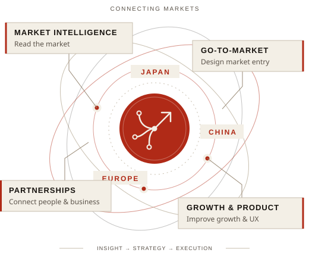

100M+
Monthly video views
C CHANNEL China | reached within 3 months
With more than 10 years in market research and B2B business development, I help companies enter and grow in Japan, China, and wider Asia—from market analysis and GTM planning to client acquisition and partnerships.
Explore my work ↓
I combine market and competitor research with hands-on business development. I identify what matters to customers, shape a market-entry plan, and help win clients and partnerships.
Across research, marketing, and digital products, I have turned evidence into decisions and carried those decisions through to execution.
I design qualitative and quantitative research, analyze competitors and customer needs, and turn findings into recommendations clients can act on.
I develop market-entry plans, reach decision-makers, win B2B clients, and build local partnerships.
I use analytics, content, and UX improvements to increase engagement, revenue, and acquisition efficiency.
Four examples of how I turn market insight into new business, stronger products, and measurable growth.
Developed opportunities in China for Japanese brands and built local partnerships with NetEase and Weibo. These collaborations helped C CHANNEL reach 100 million monthly video views within three months and more than 700,000 Weibo followers within eight months.
Used Google Analytics to identify UX bottlenecks. Content and UX improvements cut bounce rate by 37% and increased page views by 184% in three months; consulting sales to advertisers increased related revenue by approximately 140% in six months.
Proposed and launched an Asia-focused market research and GTM support business. Won multiple enterprise clients with annual revenue above JPY 10 billion and established standard processes for client development and research delivery.
Led APAC digital marketing with a promotional budget of several hundred million yen. Data analysis, UX improvements, and creative optimization helped reduce cost per acquisition by as much as 70%.
In Shanghai, I acquired B2B clients and analyzed their return on investment. I later developed China-entry plans and conducted B2B research at iGrid Solutions.
At Ipsos, I managed international research from study design through reporting. At DeNA, I applied market research, analytics, KPI design, and UX improvements to new digital businesses.
Led business development in Greater China, using local consumer insight to win Japanese corporate clients and build partnerships with NetEase and Weibo.
At Wargaming, I led APAC digital marketing and reduced CPA by up to 70%. At Energy Shares, I led content planning and UX/UI direction for a crowdfunding platform.
I lead GTM strategy for clients entering Japan and China, develop B2B opportunities and European partnerships, and manage research projects from planning through delivery.
I build tools to solve problems I encounter in my work, taking ideas from concept to working product.
A browser extension that lets people personalize Notion. Users can change text and page colors, choose fonts for English, Japanese, Korean, Simplified Chinese, and Traditional Chinese, and hide distracting interface elements to create a more focused workspace.
A standalone video research and analysis platform developed for a marketing agency’s GTM projects. It brings Xiaohongshu, Bilibili, TikTok/Douyin, and YouTube into one place to compare channels and content, track competitors, and inform content planning.
Outside my client work, I explore cross-border opportunities through partnerships, content, and products.
Torii Partners connects Chinese factories with importers and manufacturers overseas. Drawing on market knowledge and partnership development, the project helps both sides identify opportunities for cross-border collaboration.
I share interviews and market insights through videos and posts on Xiaohongshu, Bilibili, YouTube, and WeChat Official Accounts.

I spoke with a recruiter in Japan about demand for Chinese-speaking candidates and the roles employers are hiring for.
Watch the interview
JAPAN · CHINA · EUROPE
Working between Tokyo and Shanghai, I collaborate with teams and clients across Asia and Europe to turn market research into practical GTM plans and partnerships.
LANGUAGES